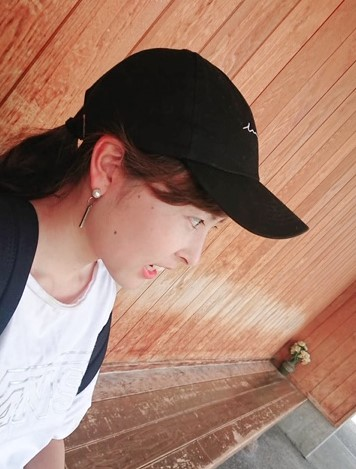

経歴
小５ 昼休みはバレーボール、放課後は公園をはしごする。
中１ 都立の中高一貫校に入学。温室育ちが加速。
中２ バドミントン部部長に抜擢。責任感を覚える。
高２ ボルネオスタディーツアで国際交流の楽しさを実感。
高３ 日頃の真面目さから体育優良児に選ばれる。
大０ 初めての挫折、予備校で浪人。
大１ 憧れの京都大学に入学。サークル・バイトに勤しむ。
大２ 未来電子テクノロジーでインターンを始める。
強み
楽しさを見出す力
やること・やらなければならないこと何でも「楽しい」と思うことができます。嫌い・苦手だと思っていたことでも、些細な楽しみを見出せばそれは私にとって「楽しいこと」になるからです。そのおかげで勉強では苦手な科目はなく、大嫌いな持久走も走り終わった後の爽快感を想像しては自然とにやけてしまい気味悪がられました。
精神的・身体的タフさ
立ち直りが早く、マイナスな感情に関して無駄に引きずることがありません。落ち込むことはよくありますが、長くともその日のうちには自己解決し次の日には前向きな気持ちになれます。さらには、どこでも眠りにつけるので疲れ知らずであり、キャパオーバーになる手前くらいの予定の詰め込みが一番好きです。
お問い合わせ
氏名or会社名
メールアドレス
メッセージ